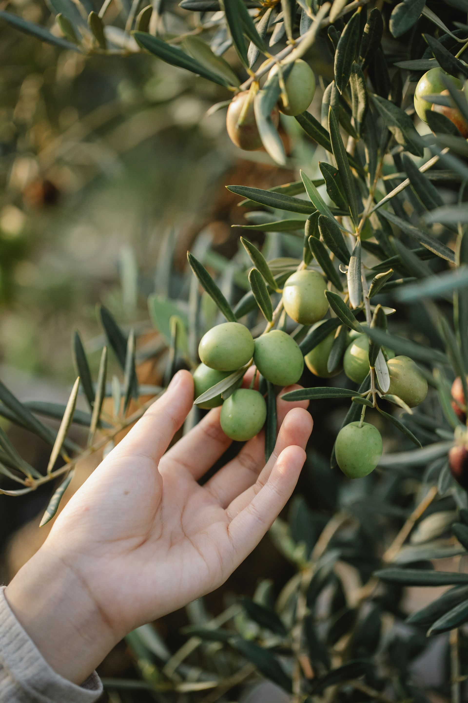
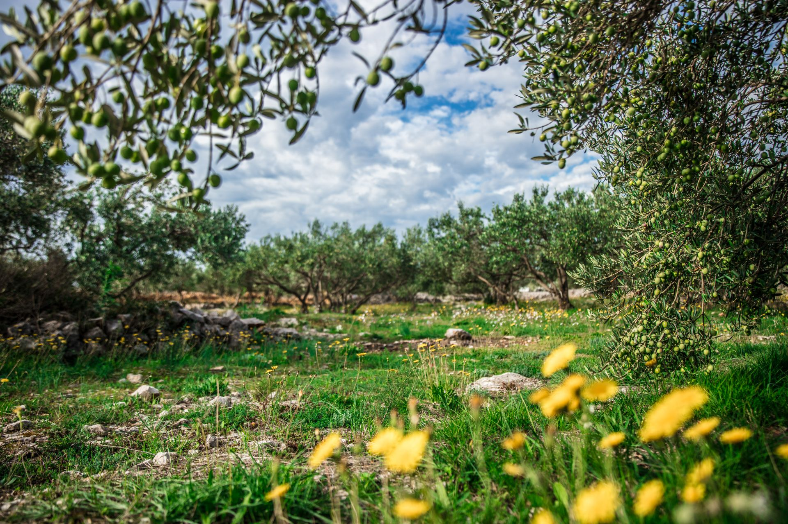
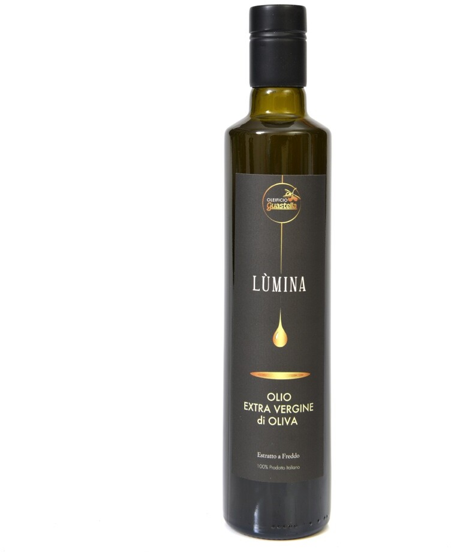

Una storia di famiglia, una passione per la nostra terra.
La nostra storia nasce in Sicilia, dove da generazioni coltiviamo i nostri ulivi custodendo una profonda passione per l’agricoltura.
Un legame che si è consolidato nel tempo, attraverso l’esperienza, la dedizione e la volontà di valorizzare i frutti del nostro territorio.


Tradizione e innovazione, insieme al territorio.
L’esperienza maturata nel tempo e la passione per questo lavoro ci hanno portato a realizzare un frantoio di nostra proprietà, con l’obiettivo di seguire direttamente ogni fase della produzione e valorizzare al meglio le caratteristiche delle nostre olive.
Collaboriamo con gli olivicoltori locali, che conferiscono le proprie olive al nostro frantoio. Un rapporto che ci permette di ampliare la nostra produzione, valorizzando le diverse cultivar del territorio e il patrimonio di esperienza di chi, come noi, dedica il proprio lavoro alla terra.
La Sicilia è la nostra casa.
È nel territorio di Mazzarrone, nel cuore della Sicilia sud-orientale, che affondano le nostre radici.
Una terra dalla forte vocazione agricola, dove il clima mediterraneo e una lunga tradizione olivicola accompagnano il nostro lavoro.
Qui portiamo avanti la nostra attività, con l’obiettivo di valorizzare il patrimonio agricolo locale e far conoscere il nostro olio anche oltre i confini della Sicilia.


Qualità, autenticità e rispetto della tradizione.
Ogni bottiglia e ogni latta racchiudono il risultato del nostro lavoro, della conoscenza della materia prima e dell’attenzione che dedichiamo alla produzione.
Desideriamo portare sulle tavole delle famiglie e nelle cucine dei professionisti un olio extravergine di oliva che esprima il carattere della nostra terra.
SCOPRI IL NOSTRO OLIO →